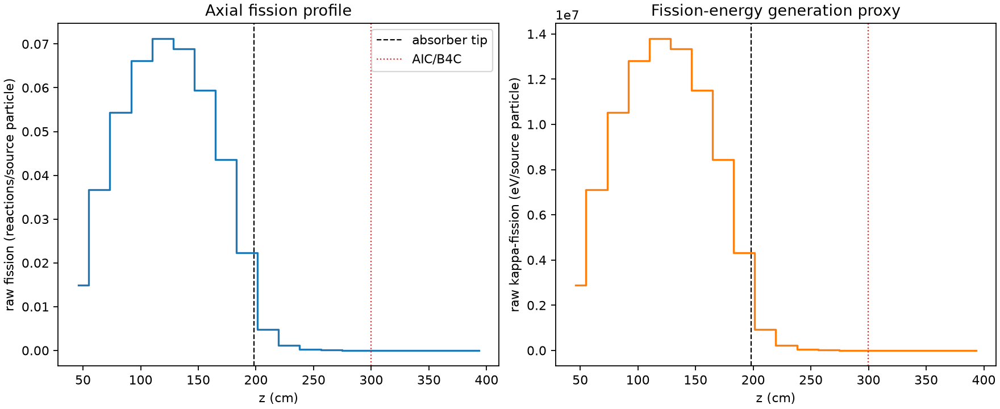
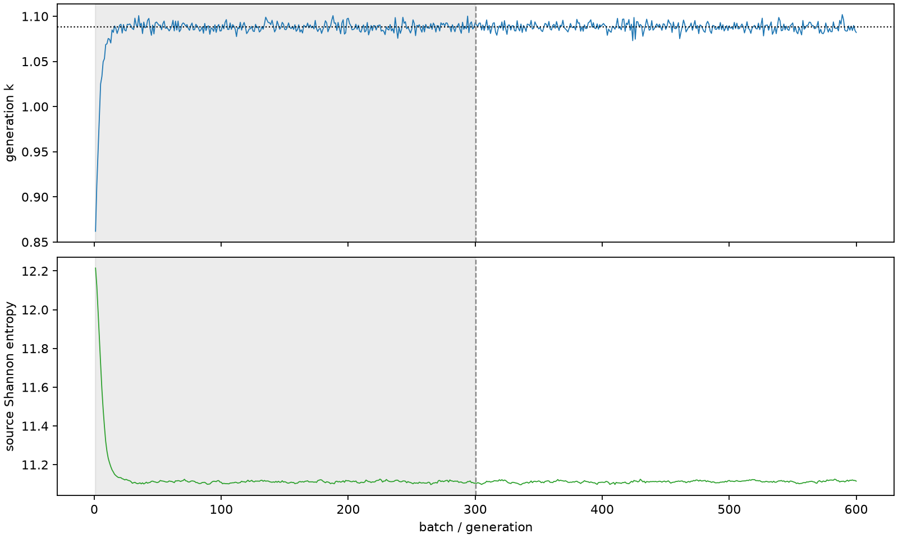

| field | value |
|---|---|
| experiment | V2-STAGE_256_OGRENCI_02-0022 |
| k | 1.0883194506044886 |
| MC standard error | 0.0001872439275382563 |
| seconds | 967.9776034099996 |
| acceptance | not_assessed |
| convergence | review_required |
Completed is output integrity only; physical and statistical review required. Zero tallies do not prove zero production or zero uncertainty.
| diagnostic | value |
|---|---|
| geometric fuel voxels | 5280 |
| zero fission tally voxels | 772 |
| low signal fuel voxels | 1881 |
| low signal fission share | 6.368527801926502e-05 |
| low signal kappa share | 6.37171923037764e-05 |
| important fission share | 0.9500405393436613 |
| previous filter included | 3399 |
| duration estimate s | 1562.5173488400023 |
| actual minus estimate s | -594.5397454300028 |
| fission relative MC error | statistics |
|---|---|
| all_geometric_fuel | {"voxels": 5280, "positive_mean_voxels": 4508, "zero_mean_voxels": 772, "undefined_relative_error_voxels": 772, "median": 0.013094681558950431, "p95": 1.0, "maximum": 1.0000000000000002} |
| low_signal | {"voxels": 1881, "positive_mean_voxels": 1109, "zero_mean_voxels": 772, "undefined_relative_error_voxels": 772, "median": 0.7082603961455716, "p95": 1.0, "maximum": 1.0000000000000002} |
| important_95pct | {"voxels": 2100, "positive_mean_voxels": 2100, "zero_mean_voxels": 0, "undefined_relative_error_voxels": 0, "median": 0.006726170286927524, "p95": 0.01066678057270936, "maximum": 0.013249602654122256} |
| outside_previous_filter | {"voxels": 1881, "positive_mean_voxels": 1109, "zero_mean_voxels": 772, "undefined_relative_error_voxels": 772, "median": 0.7082603961455716, "p95": 1.0, "maximum": 1.0000000000000002} |
| kappa_fission relative MC error | statistics |
|---|---|
| all_geometric_fuel | {"voxels": 5280, "positive_mean_voxels": 4508, "zero_mean_voxels": 772, "undefined_relative_error_voxels": 772, "median": 0.01307826520364535, "p95": 1.0, "maximum": 1.0000000000000002} |
| low_signal | {"voxels": 1881, "positive_mean_voxels": 1109, "zero_mean_voxels": 772, "undefined_relative_error_voxels": 772, "median": 0.708451652809292, "p95": 1.0, "maximum": 1.0000000000000002} |
| important_95pct | {"voxels": 2100, "positive_mean_voxels": 2100, "zero_mean_voxels": 0, "undefined_relative_error_voxels": 0, "median": 0.0067179834297447436, "p95": 0.010653588718335695, "maximum": 0.013232493863322231} |
| outside_previous_filter | {"voxels": 1881, "positive_mean_voxels": 1109, "zero_mean_voxels": 772, "undefined_relative_error_voxels": 772, "median": 0.708451652809292, "p95": 1.0, "maximum": 1.0000000000000002} |
| axial bin | fission share | kappa-fission share |
|---|---|---|
| 1 | 0.033477487754358486 | 0.03347889119052604 |
| 2 | 0.08270557769635191 | 0.08270483606453731 |
| 3 | 0.1224904537195801 | 0.12248924179559975 |
| 4 | 0.14910878275728753 | 0.14910757288291523 |
| 5 | 0.16029041362225147 | 0.16028915414963188 |
| 6 | 0.15518950112058794 | 0.15518801558227838 |
| 7 | 0.13392477042789536 | 0.1339235340110815 |
| 8 | 0.09818096759556845 | 0.09817997833464427 |
| 9 | 0.0503636871195861 | 0.05036494776062989 |
| 10 | 0.010826457373313086 | 0.01083046662011791 |
| 11 | 0.0026026547076058444 | 0.002603720460628849 |
| 12 | 0.0006394614635085777 | 0.0006397591471729231 |
| 13 | 0.00015327528939747205 | 0.00015335096363377248 |
| 14 | 3.753642387061036e-05 | 3.75523982625966e-05 |
| 15 | 7.02054005098678e-06 | 7.0240167712576335e-06 |
| 16 | 1.1245268001220846e-06 | 1.1259202266615956e-06 |
| 17 | 7.107885676366483e-08 | 7.110164177706008e-08 |
| 18 | 1.7100272874677464e-08 | 1.7391276933895017e-08 |
| 19 | 1.9867987191464848e-07 | 1.988000375601018e-07 |
| 20 | 5.410029844514494e-07 | 5.41408385500574e-07 |
Histories include the inactive-to-active transition at batch 300. kappa-fission approximates fission energy production, not total heat deposition.

